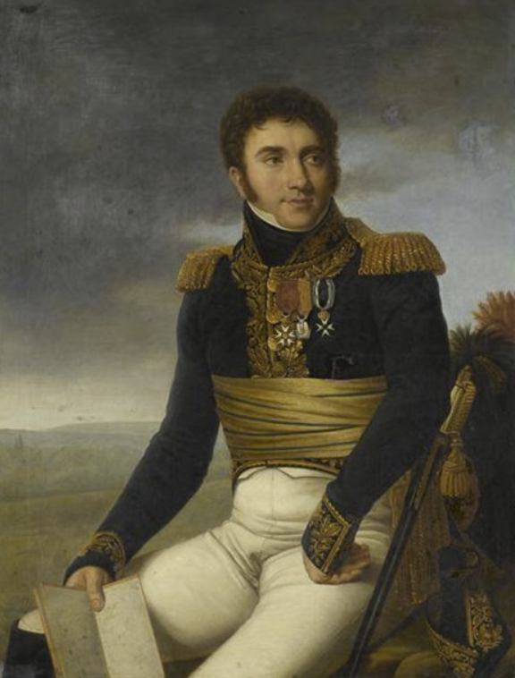
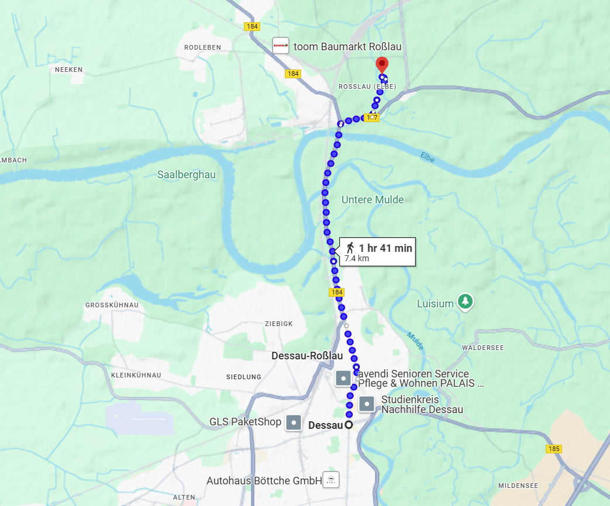
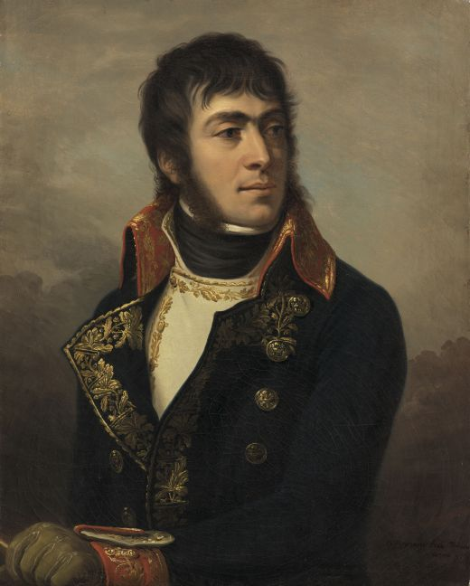
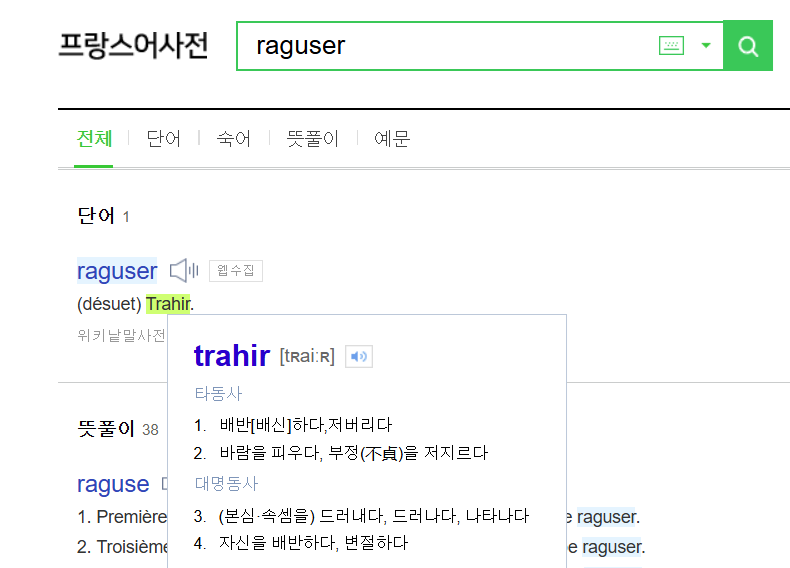
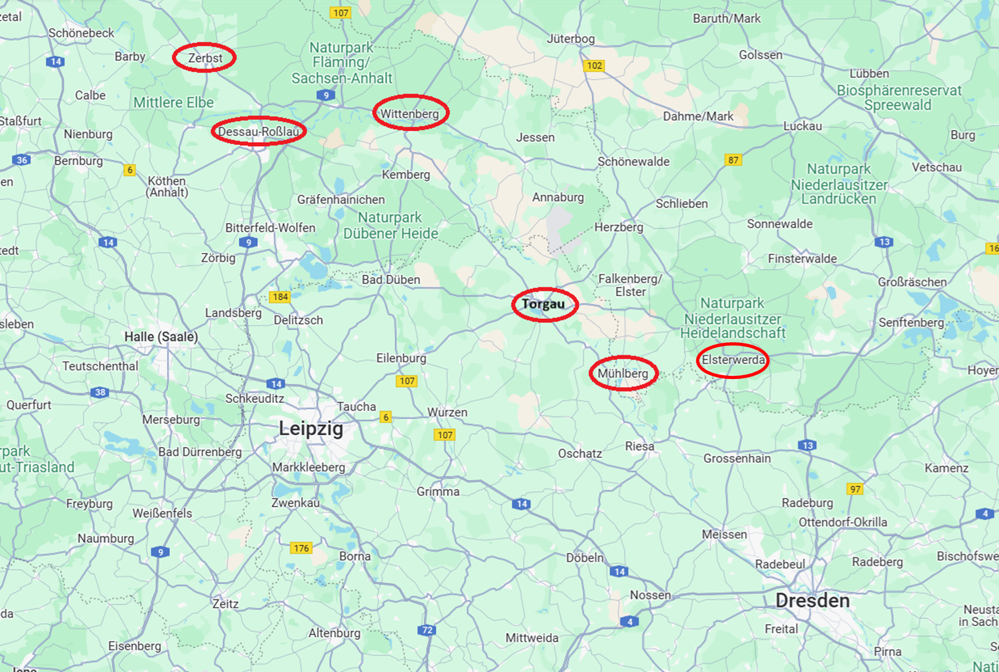

라이프치히로 가는 길 (9) - 막상막하
게시: 2024-12-23T06:30:07+09:00
적군이 삽질을 하면 아군에게는 기회가 생기기 마련이었습니다. 네가 엘스터-바르텐부르크 방면에서 연달아 잘못된 판단을 내리며 우물쭈물하고 있는 것은 단지 연합군에게 피해를 입힐 기회가 사라졌다는 뜻만은 아니었습니다. 네의 베를린 방면군이 막아야 할 적군, 그러니까 베르나도트의 본진은 데사우(Dessau) 일대에서 무인지경으로 활개칠 수 있었습니다. 실제로 베르나도트의 본진과 대치하고 있는 것은 드프랑스(Jean-Marie Defrance) 장군의 중기병 사단 하나와 다보로프스키(Jan Henryk Dąbrowski)의 폴란드 보병사단 하나 뿐이었습니다.

(드프랑스 장군입니다. 그는 의사의 아들로 태어나 평민이지만 나름 중산층의 삶을 살았는데, 천성이 군인이었는지 혁명 이전에 이미 사병으로 카리브해의 아이티에 배치되어 있었습니다. 그는 1792년에 귀국하여 혁명군에 참여하면서 소위로 진급했는데, 승진도 꽤 빨라 1799년 제1차 취리히 전투 때 이미 준장으로의 승진을 제안받았습니다. 그런데 정말 독특하게도, 그는 승진을 거부하고 기병 연대의 지휘관 보직을 달라고 요청했고, 실제로 제12 엽기병(Chasseurs-a-Cheval) 연대를 맡아 이탈리아와 스위스 일대에서 싸웠고, 그 상태로 마렝고 전투에도 참전했습니다. 이후 계속 기병대 지휘관을 맡았던 그는 정말 전투에만 능한 군인이었는지 이후에는 승진이 느렸고, 1812년 러시아 보로디노 전투 직후에야 소장으로 진급했습니다. 그렇게 정치색이 별로 없던 것이 도움이 되었는지, 그는 나폴레옹의 백일천하 때 나폴레옹 편에 서서 방데 지방의 반(反)나폴레옹 봉기를 진압했음에도 제2차 폐위 이후에도 계속 군에서의 자리를 보전할 수 있었습니다.) 그러나, 전장에서 모든 것은 상대적이었습니다. 적군이 아군 방어선을 뚫고 돌출부를 만들었다면, 그건 아군 방어선의 붕괴를 뜻할 수도 있었지만 반대로 적군을 3면에서 포위섬멸할 기회가 생겼다는 뜻이 될 수도 있었습니다. 베르나도트는 그렇게 긍정적인 성격의 사람이 아니었으며, 삽질로 치자면 네와 막상막하를 이루었습니다. 그는 눈 앞의 네가 우르르 비텐베르크 방면으로 몰려가 엘스터의 연합군 부교 앞에 진을 쳤다는 소식을 듣고는, 당장 자신이 엘베강을 넘어 진격할 기회라기보다는 비텐베르크를 포위한 뷜로의 프로이센군이 위기에 처했다고 판단했습니다. 네 본인이 직접 바르텐부르크에 도착하던 9월 24일, 그는 뷜로에게 명령서를 발부합니다. 내용은 놀랍게도 엘베강 좌안으로 건너갔던 병력을 모두 다시 우안으로 철수시키고, '별로 중요하지도 않은' 엘스터의 부교를 철거한 뒤 비텐베르크 포위망을 강화하라는 것이었습니다. 뷜로는 이런 어이 없는 명령서를 받고 화를 냈습니다만, 블뤼허에게 '베르나도트의 명령 따위는 이제 듣지 않겠다'라고 큰 소리를 쳤던 것이 무색하게도 그 명령을 순순히 수행했습니다. 그는 엘스터 마을에 주둔하고 있던 보슈텔 장군을 시켜 부교를 철거하고, 그 부교를 구성했던 보트들 중 가능한 것들은 '검은 엘스터' 강으로 끌고 가고, 나머지는 모두 침몰시켰습니다. 뿐만 아니라 엘스터 마을에는 1개 대대 병력만 남겨두고 모두 비텐베르크로 이동했습니다. 일이 이렇게 되자 더욱 입장이 난처해진 것은 네였습니다. 프로이센군이 강을 넘어 쳐들어올 것이라고 동네방네 소리를 질러놓았는데, 오히려 프로이센군이 스스로 다리를 끊고 후퇴해버렸으니 졸지에 허위 경보 양치기 소년이 된 셈이었으니까요. 초조해진 네는 서둘러 레이니에의 제7군단과 함께, 바르텐부르크에 있던 베르트랑의 제4군단까지 동원하여 데사우 방면을 들이쳤습니다. 그러나 데사우를 점령하고 있던 슐첸하임(Conrad Theodor von Schulzenheim)의 스웨덴군 여단은 베르나도트의 철수 명령을 받고 묄더강에 애써 놓았던 다리까지 버리고 이미 물러난 뒤였습니다. 데사우를 무혈점령하면서도 약간 짜증이 났던 네에게는 다행스럽게도, 데사우 바로 북쪽에 있는 로슬라우(Roßlau)에서는 약간 상황이 달랐습니다.

(데사우와 로슬라우 일대의 지도입니다. 로슬라우에서 엘베강과 묄더강이 합류합니다.) 엘베 강변 우안에 위치한 로슬라우에서는 스웨덴군이 엘베강을 가로지르는 부교를 지어놓았을 뿐만 아니라, 엘베강 좌안에도 소수의 스웨덴군이 참호를 파고 교두보를 구축한 뒤 농성하고 있었습니다. 이렇게 등 뒤의 부교를 제외하면 배수의 진을 친 스웨덴군의 교두보를 향해, 9월 29일 네는 5배의 병력을 동원하여 공격했습니다. 그러나, 스웨덴군은 만만치 않은 투지를 보여주었습니다. 참호로 보호된 교두보는 꽤 든든한 진지였고, 또 엘베강 건너편에서 맹렬히 날아드는 스웨덴군 포병대의 포격 때문에 결국 네의 공격은 실패로 끝났습니다. 네는 그 교두보를 강습을 통해 점령하는 것은 사실상 불가능하다고 판단하게 되었습니다. 그러는 사이 또 나폴레옹의 편지가 네에게 날아들었습니다. 장황한 편지 내용을 요약하면 이랬습니다. "베르나도트가 엘베강을 건너 라이프치히 방면으로 진격해올 거라고? 걔가 그런다면 내 손에 장을 지진다! 그 소심한 인간은 슈바르첸베르크가 보헤미아 방면군을 이끌고 켐니츠(Chemnitz)로 진격을 시작하기 전에는 감히 움직이지 않을 것이다. 만약 걔가 뭘 잘못 먹어서 먼저 움직인다? 그럴 경우엔 통과하게 내버려둔 뒤에 걔가 건넌 엘베강의 다리를 끊어서 후퇴를 차단하라. 그럴 경우 베르나도트는 머리가 끊어진 지네 꼴이 될 것이다. 아마 베르나도트는 현재 위치에서 꼼짝하지 않을 것인데, 못할 것이니, 네 당신이 먼저 엘베강 우안으로 도강하여 비텐베르크의 포위를 풀고 우안으로부터 베르나도트의 다리들을 위협하라. 베르나도트는 더욱 겁에 질릴 것이다." 과연 베르나도트를 잘 아는 나폴레옹다운 예상이었습니다만, 문제는 그렇게 베르나도트를 상대할 네의 병력이 충분치 않다는 점이었습니다. 나폴레옹은 네의 베를린 방면군 잔존병력이 8만은 될 것이라고 평가하고 있었지만, 실은 4만 정도에 불과했습니다. 10만 정도의 병력을 거느린 베르나도트의 북부 방면군에 비해 지나친 열세였습니다. 그런 병력 열세 속에서 비텐베르크를 포위한 뷜로의 군단을 공격하여 비텐베르크 요새를 구원한다는 것은 누가 봐도 무리였습니다. 다행히 나폴레옹은 네의 지원 병력 호소를 받고 마르몽의 제6군단으로 하여금 네의 지휘를 받게 해주었습니다.

(배신의 대명사인 마르몽입니다. 그는 나폴레옹의 제1차 이탈리아 침공 때부터 나폴레옹의 심복이었으나, 알고 보면 능력치가 대단하지는 않았는지 눈에 띄는 전공을 세우지는 못했습니다.)

(라구사(Ragusa) 공작 마르몽이 유명해진 것은 프랑스어에 raguser(배신하다)라는 신조어를 도입한 장본인이 되었기 때문입니다. 실제로 아직도 쓰이는 동사라고 합니다.) 그러나 마르몽은 당시 라이프치히 남쪽에서 독자적인 작전을 수행하고 있었습니다. 전에 언급한 바 있는, 9월 28일 알텐부르크(Altenburg) 외곽에서 르페브르-데누엣(Charles Lefebvre-Desnouettes)의 프랑스군이 작센 출신 망명 장군인 틸만(Johann von Thielmann)의 코삭 및 작센 유격대에게 박살이 나고 알텐부르크까지 함락된 사건이 있었던 것입니다. 10월 1일 네는 마르몽에게 데사우 남쪽 방면으로 사단들을 이동시키라고 명령했으나, 평소 네에게 경쟁 의식을 가지고 있던 마르몽은 네에게 답장조차 하지 않았고 대신 나폴레옹에게 편지를 보내 알텐부르크 일대의 적군을 제압해야 하므로 네의 명령에 따를 수가 없다는 변명만 늘어놓았습니다. 이렇게 그랑다르메 내부에서도 손발이 맞지 않는 가운데, 9월 28일 블뤼허는 마침내 엘스터베르다(Elsterwerda)에 도착하여 타우엔치언과 직접 만나 작전 회의를 하게 되었습니다. 프로이센의 이 두 노장의 만남은 조국을 위한 뜨거운 투쟁심으로 단결한 감격적인 광경이었을까요? 그게 꼭 그렇지가 않았습니다.

(일전에 보셨던 엘스터베르다와 토르가우 일대의 지도입니다. 그나아제나우가 슐레지엔 방면군의 실제 도강 지점으로 점찍어 놓고 있던 뮐베르크(Muhlberg)의 위치에 주목하시기 바랍니다.) Source : The Life of Napoleon Bonaparte, by William Milligan Sloane Napoleon and the Struggle for Germany, by Leggiere, Michael V With Napoleon's Guns by Colonel Jean-Nicolas-Auguste Noël https://www.britannica.com/event/Napoleonic-Wars/Dispositions-for-the-autumn-campaign http://www.historyofwar.org/articles/campaign_leipzig.html https://en.wikipedia.org/wiki/Jean-Marie_Defrance https://dict.naver.com/frkodict/#/search?query=raguser https://en.wikipedia.org/wiki/Auguste_de_Marmont